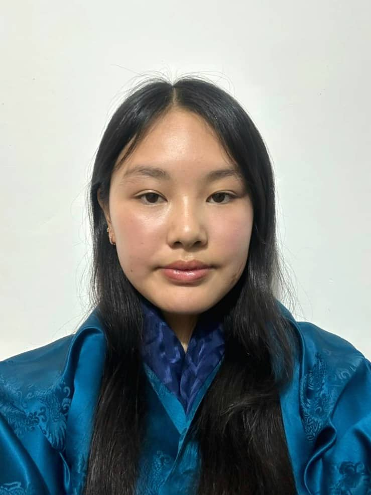

About Me
I am Pema Rinzin Deolkar from Bumthang Dzongkhag, and I recently completed the Bhutan Baccalaureate programme at The Royal Academy, where I studied from 2019 to 2024. My journey there helped me grow across the five areas of development cerebral, emotional, physical, social, and spiritual, while also deepening my passion for technology, engineering, and space exploration. Along the way, I taught myself programming languages, participated in robotics and mathematics competitions, and gained hands on experience through school webcasts, research projects, and even an internship building a Panoptes unit. Beyond academics, I enjoy basketball, outdoor treks, and community service, all of which strengthened my teamwork, leadership, and communication skills. These experiences have shaped me into a curious, resilient, and motivated learner, and I am excited to continue exploring new opportunities to learn, grow, and contribute positively to my community and beyond.
My Academic Goals
My academic goal for this semester is not not lose focus in academics activities.
And to definitely PASS the exams.
Profile

Software Engineering

Daily Class Schedule
- MON - DZG101, CSF101(BLOCK), NWC201(P)
- TUE - MAT205, DZG101(BLOCK), CSF101(P)
- WED - NWC201, SDA101(BLOCK), NWC201(P)
- THU - DZG101(T), MAT205(BLOCK), SDA201(P)
- FRI - MAT205, NWC01(BLOCK)
- Assignmets
- Dzongkha topic questions
- Math flip class
- SDA figma update
- Free time
- Online course
- Sports
- Music
STUDY GOALS
- Probability
- Standard deviation
- Dispersion
- Scaling method
- Figma
- Prototyping
- Skeleton method
- Explore new template